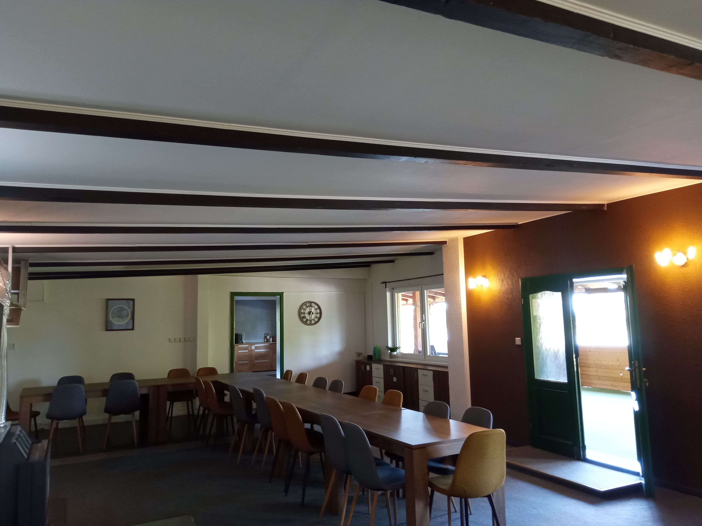

Gemeinschaftsbereich
Im 1. OG finden Sie einen großen Aufenthaltsraum mit Zugang auf die teils übderdachte Terrasse mit Blick über den See. Außerdem befinden sich hier die Küche und ein Kinder-/ Spielbereich mit Tischkicker und Dartscheibe.

Erdgeschoss
Im EG finden Sie insgesamt 6 Zimmer jeweils mit eigenem Badezimmer:
Zimmer 1: Geräumiges Vierbettzimmer mit einem Stockbett und zwei Einzelbetten
Zimmer 2: Fünfbettzimmer mit zwei Stockbetten und einem Einzelbett
Zimmer 3+5: Zwei Vierbettzimmer mit jeweils einem Stockbett und zwei Einzelbetten
Zimmer 4: Zweibettzimmer mit einem Stockbett
"Hüttenzimmer"
In den beiden aufgesetzten "Hütten", die Sie jeweils über eine Treppe aus dem 1. OG erreichen, befindet sich jeweils ein Vierbettzimmer. Für diese beiden Zimmer steht ein gemeinsames Bad im 1. OG zur Verfügung.
Garten
Zu unserem Gruppenhaus gehört ein Garten, der hinter dem Haus liegt und in dem unseren Gästen eine kleine Rasenfläche sowie eine befestigte Terrasse mit Feuerschale und Sitzmöglichkeiten zur Verfügung steht. Vor dem Gebäude gibt es einen hauseigenen Parkplatz. An das Gruppenhausgelände schließt sich ein öffentlicher Park direkt am See an, mehr dazu finden Sie im Bereich Umgebung.